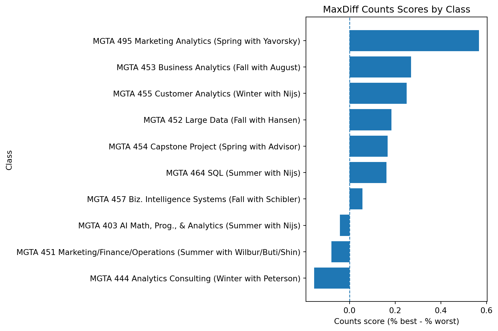
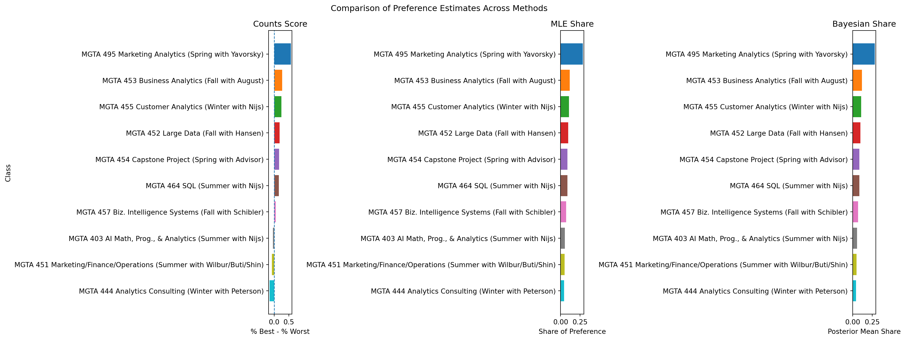

Counts, MLE, and Bayesian estimation of the MNL model
Author
Leia Kawamura
Published
June 4, 2026
Introduction
Note
[MaxDiff] (Best-Worst Scaling) is a method for measuring relative preferences by asking respondents to select the most preferred and least preferred items from a small set of options. This method is effective because, while assigning consistent ratings on a 1–10 scale is prone to scale-use bias, people are better at making trade-offs.
In this study, the items under consideration are the 10 core courses in the UCSD RadySchool of Management MSBA program. To estimate students’ course preferences, we employ three methods: a simple “best-worst difference” aggregate analysis, a multinomial logit model using maximum likelihood estimation, and a Bayesian MNL model using the Metropolis-Hastings algorithm. While these methods generally agree on the ranking of courses, differences are expected to emerge in how they measure the strength of preferences and uncertainty.
The Data
::: In this section, we will import the MaxDiff survey data and item label files. The main dataset contains one row for each item presented to respondents within a task. Each row includes the respondent ID, task number, item position, and item number, as well as whether the item was selected as “Best,” “Worst,” or “Neither.”
The other file, the item-label file, is used to map the numeric item IDs to the corresponding MSBA course names.
import pandas as pdchoices = pd.read_csv("maxdiff_design_and_choices.csv")labels = pd.read_csv("maxdiff_item_labels.csv")N = choices["Record ID"].nunique()tasks_per_respondent = ( choices.groupby("Record ID")["Task"] .nunique())items_per_task = ( choices.groupby(["Record ID", "Task"]) .size())K = labels["Item #"].nunique()print(f"N respondents: {N}")print(f"T tasks per respondent: {tasks_per_respondent.unique()}")print("J items per task:")print(items_per_task.value_counts().sort_index())print(f"Total study items: {K}")
N respondents: 85
T tasks per respondent: [15]
J items per task:
2 595
4 680
Name: count, dtype: int64
Total study items: 10
The dataset contains 85 respondents, with 15 tasks per respondent. The item-label file contains 10 total study items, corresponding to the 10 core MSBA classes.
The sanity check verifies whether each task has exactly one best choice, one worst choice, and two neutral options. But some tasks do not follow the expected four-row MaxDiff structure, so this check flags those cases before modeling.
The 10 labeled items are shown a roughly equal number of times, ranging from 323 to 340 exposures. This suggests the MaxDiff design is reasonably balanced across classes. :::
Counts Analysis
::: The counts analysis provides a simple first look at class preferences without using a statistical model. For each class, I calculate how often it was selected as the most-preferred option and how often it was selected as the least-preferred option, out of the total number of times it was shown. The counts score is defined as following:
A score closer to +1 means the class was frequently selected as best when shown. On the other hand, a score closer to -1 means it was frequently selected as worst. A score near 0 suggests the class is either middle-of-the-pack or receives mixed reactions from students.
import matplotlib.pyplot as pltplot_data = counts_table.sort_values("score", ascending=True)plt.figure(figsize=(9, 6))plt.barh(plot_data["item_label"], plot_data["score"])plt.axvline(0, linestyle="--", linewidth=1)plt.xlabel("Counts score (% best - % worst)")plt.ylabel("Class")plt.title("MaxDiff Counts Scores by Class")plt.tight_layout()plt.show()

The counts analysis shows that MGTA 495 Marketing Analytics is the most preferred class by a large margin. Its score is much higher than the others, meaning it was selected as “best” far more often than it was selected as “worst” when shown. One possible explanation is that students especially enjoy Professor Dan’s class.
The next most preferred classes are MGTA 453 Business Analytics, MGTA 455 Customer Analytics, MGTA 452 Large Data, MGTA 454 Capstone Project, and MGTA 464 SQL, all of which have positive scores. This suggests that these classes were generally viewed favorably.
At the lower end, we observed MGTA 444 Analytics Consulting , MGTA 451 Marketing/Finance/Operations and MGTA 403 AI Math, Programming, & Analytics. These classes were scored closer to -1. Finally, MGTA 457 Business Intelligence Systems is close to zero, suggesting a more neutral or middle-of-the-pack preference. :::
From MaxDiff Data to MNL Choices
::: Before fitting the multinomial logit model, we need to convert the MaxDiff responses into choice observations. In the MaxDiff survey, each task shows a respondent a small set of classes, and the respondent chooses one class as the most preferred and one class as the least preferred. Following to that, the MNL framework from the week 5 conjoint slides, each choice can be modeled as a probabilistic selection from the available alternatives.
The MNL model assigns each item \(j\) a utility coefficient \(\beta_j\). If a task shows items \(\{a, b, c, d\}\), then the probability that item \(b\) is selected as the best item is following:
After the best item is selected, the worst item is chosen from the remaining three items. Since the worst choice represents the least preferred item, the utilities are flipped. For example, if item \(b\) was selected as best, then the probability that item \(c\) is selected as worst is following:
\[
P(\text{worst} = c \mid \text{best} = b) \;=\; \frac{\exp(-\beta_c)}{\exp(-\beta_a) + \exp(-\beta_c) + \exp(-\beta_d)}
\]
Therefore, each MaxDiff task contributes two MNL-style choice observations: one for the best choice from the full set of four items, and one for the worst choice from the remaining three items.
One important issue is identifiability. The soft-max probabilities do not change if the same constant is added to every utility coefficient. What this means is only relative utilities are identified, not the absolute level of utility. Since there are 10 classes, only \(J - 1 = 9\) coefficients can be freely estimated. I normalize the model by setting \(\beta_1 = 0\) and estimating the remaining coefficients, \(\beta_2, \ldots, \beta_{10}\).
To make the data easier to use in the likelihood function, I reshape it so that each respondent-task is represented by one row. Each row stores the four items shown in that task, the item selected as best, and the item selected as worst.
print(f"Number of valid MNL tasks: {len(task_data)}")
Number of valid MNL tasks: 680
The reshaped dataset now has one row per valid MaxDiff task. Each row stores the four items shown to the respondent, the item chosen as best, and the item chosen as worst. This structure is convenient for the MNL likelihood because each task contributes two choice probabilities:
the probability of the observed best choice from the full set.
the probability of the observed worst choice from the remaining items.
After filtering to valid four-item tasks with both a best and worst response, the resulting task-level dataset is ready to be used in the MNL likelihood function. :::
MNL via Maximum Likelihood
::: The counts analysis gives a useful descriptive ranking, but it does not estimate a formal choice model. Next, I fit a multinomial logit model using maximum likelihood. In this model, each class \(j\) receives a utility coefficient \(\beta_j\). Higher values of \(\beta_j\) indicate stronger preference.
For each MaxDiff task, the likelihood has two parts: the probability of the observed best choice from the full set of four items, and the probability of the observed worst choice from the remaining three items, using flipped utilities. The log-likelihood is following:
where \(j^*_b\) is the item selected as best and \(j^*_w\) is the item selected as worst.
Because MNL utilities are only identified up to an additive constant, I set \(\beta_1 = 0\) as the reference class and estimate the remaining nine coefficients.
import numpy as npfrom scipy.optimize import minimizefrom scipy.special import logsumexptask_data["best"] = task_data["best"].astype(int)task_data["worst"] = task_data["worst"].astype(int)def expand_beta(beta9):""" Convert a length-9 beta vector into a length-10 vector, with beta_1 fixed at 0. """ beta_full = np.zeros(10) beta_full[1:] = beta9return beta_fulldef ll(beta9, task_data):""" Log-likelihood for MaxDiff MNL. beta9 estimates beta_2 through beta_10. beta_1 is fixed to 0. """ beta = expand_beta(beta9) total_ll =0.0for _, row in task_data.iterrows(): shown = np.array(row["items"], dtype=int) best =int(row["best"]) worst =int(row["worst"]) shown_idx = shown -1 best_idx = best -1 worst_idx = worst -1 v_best = beta[shown_idx] total_ll += beta[best_idx] - logsumexp(v_best) remaining = shown[shown != best] remaining_idx = remaining -1 v_worst =-beta[remaining_idx] total_ll +=-beta[worst_idx] - logsumexp(v_worst)return total_lldef neg_ll(beta9, task_data):return-ll(beta9, task_data)start = np.zeros(9)out = minimize( neg_ll, start, args=(task_data,), method="BFGS")out.success, out.fun
import matplotlib.pyplot as pltplot_mnl = mnl_results.sort_values("share", ascending=True)plt.figure(figsize=(9, 6))plt.barh(plot_mnl["item_label"], plot_mnl["share"])plt.xlabel("Share of preference")plt.ylabel("Class")plt.title("MNL Shares of Preference")plt.tight_layout()plt.show()
The MNL results are broadly consistent with the counts analysis. Classes that had high best-minus-worst scores also tend to receive larger MNL preference shares. The MNL shares are easier to interpret than the raw utility coefficients because they sum to 1 across the 10 classes and can be read as the predicted share of choices each class would receive if all classes appeared together.
The highest-ranked class under the MNL model is expected to be similar to the highest-ranked class in the counts analysis also. Any differences between the rankings occur because the MNL model accounts for the specific choice sets in which each class appeared, rather than only using aggregate best and worst counts. As a result, the MNL model provides a more formal estimate of relative preference strength. :::
MNL via Bayesian Estimation
::: In this section, I fit the same MNL model but, using Bayesian estimation. Instead of finding only the maximum-likelihood estimate, the Bayesian approach estimates a posterior distribution over the utility coefficients. This approach allows us to describe both the likely value of each preference parameter and the uncertainty around it.
Using Bayes’ rule, the posterior is proportional to the likelihood times the prior:
This prior is centered at zero and has a standard deviation of about 3.2 for each coefficient, which is diffuse enough to allow a wide range of preference values while still keeping the estimates reasonable.
Because the posterior does not have a closed-form solution, here I use a random-walk Metropolis-Hastings sampler. At each iteration, the sampler proposes a new value of \(\boldsymbol{\beta}\) by adding random normal noise to the current value, then accepts or rejects the proposal based on the posterior density.
I start the chain at the MLE estimates from the previous section. The iteration is set at 2,000 for the sample, and the step size is tuned so that the acceptance rate falls in a reasonable range.
The final Metropolis-Hastings acceptance rate is 0.280, which falls within the recommended tuning range of roughly 25%–40%. This suggests that the proposal step size is reasonable: the chain is moving enough to explore the posterior while still accepting a sufficient number of proposed draws.
burn =int(0.25* n_iter)post_draws = draws[burn:, :]print(f"Burn-in draws discarded: {burn}")print(f"Post-burn-in draws retained: {post_draws.shape[0]}")
Burn-in draws discarded: 500
Post-burn-in draws retained: 1500
To check convergence visually, I plot trace plots for a few selected coefficients. A good trace plot should look like a stable “fuzzy caterpillar”. On the contrast, the plot should not be look a slow upward or downward drift.
Next, I compute the posterior mean and 95% (2.5% &2.5%) credible interval for each utility coefficient. Since \(\beta_1\) is fixed to zero for identification, I add it back into the posterior draws before calculating the summaries.
I also convert each posterior draw into shares of preference:
The Bayesian MNL results should be very close to the MLE results because the prior is weakly informative and the data provide substantial information. The posterior mean utilities are expected to be similar to the MLE coefficients, and the posterior mean shares should follow nearly the same ranking as the MLE shares.
The main advantage of the Bayesian approach is that it gives a direct measure of uncertainty through the posterior credible intervals. Classes with larger posterior mean shares are estimated to be more preferred, while wider credible intervals indicate more uncertainty about the exact strength of that preference. :::
Comparing the Three Methods
::: In this section, I compare the results from the three approaches: the simple counts analysis, the MNL model estimated by maximum likelihood, and the Bayesian MNL model. The goal is to see whether the methods produce similar rankings and where they differ.
import matplotlib.pyplot as pltimport numpy as npitems_sorted = comparison_all["item_label"].tolist()colors = plt.cm.tab10(np.linspace(0, 1, len(items_sorted)))color_map =dict(zip(items_sorted, colors))fig, axes = plt.subplots(1, 3, figsize=(18, 7))# Counts plotcounts_plot = comparison_all.sort_values("counts_score", ascending=True)axes[0].barh( counts_plot["item_label"], counts_plot["counts_score"], color=[color_map[x] for x in counts_plot["item_label"]])axes[0].axvline(0, linestyle="--", linewidth=1)axes[0].set_title("Counts Score")axes[0].set_xlabel("% Best - % Worst")axes[0].set_ylabel("Class")# MLE plotmle_plot = comparison_all.sort_values("mle_share", ascending=True)axes[1].barh( mle_plot["item_label"], mle_plot["mle_share"], color=[color_map[x] for x in mle_plot["item_label"]])axes[1].set_title("MLE Share")axes[1].set_xlabel("Share of Preference")axes[1].set_ylabel("")# Bayesian plotbayes_plot = comparison_all.sort_values("bayes_share", ascending=True)axes[2].barh( bayes_plot["item_label"], bayes_plot["bayes_share"], color=[color_map[x] for x in bayes_plot["item_label"]])axes[2].set_title("Bayesian Share")axes[2].set_xlabel("Posterior Mean Share")axes[2].set_ylabel("")plt.suptitle("Comparison of Preference Estimates Across Methods")plt.tight_layout()plt.show()

Overall, these three methods yield very similar results. The greatest agreement is typically found at the top and bottom of the rankings. The most preferred class remains at the top across all methods—the counting method, the MLE method, and the Bayesian method—while the least preferred class remains at the bottom. This suggests that the general trends in preferences are consistent regardless of the method used.
Differences arise primarily in the middle of the rankings, where several classes exhibit similar scores or shares. In this range, we can see that the rankings of two adjacent classes can easily shift due to slight differences in the data or modeling methods. The MNL model offers added value compared to simple count analysis because it explicitly models the selection process. Each task provides not only information about which items were selected as the best or worst, but also information about the options that were presented but not selected. Bayesian models provide point estimates similar to those of MLE models, but they add a more direct means of conveying uncertainty, particularly regarding derived measures such as preference shares. :::
Discussion
::: Overall, all three methods point to essentially the same conclusion. The results show that students have a strong preference for MGTA 495 Marketing Analytics, a course that clearly stands out from the other MSBA core courses. Business Analytics, Customer Analytics, Big Data, Capstone Project, SQL, among others, also appear to be well-received. On the other hand, Analytics Consulting, Marketing/Finance/Operations, and AI Math, Programming, and Analytics rank lower, with relatively lower preference scores. One interesting finding is how clearly Marketing Analytics stands out from other courses, suggesting that students may place particular emphasis on applied, specialized analytics courses.
Methodologically, each approach serves different purposes. Count analysis is the simplest and easiest to explain, and is useful for quick descriptive summaries or executive dashboards. I believe it is highly effective when, as an analyst, you want to quickly identify trends or grasp the big picture. The MLE and MNL models are more rigorous because they explicitly model the choice process and generate point estimates with standard errors. This is useful when a single preference estimate is needed for reporting purposes. The Bayesian MNL model is the most flexible because it provides a complete posterior distribution, making it easier to summarize uncertainty in preference shares or extend the model to more complex settings, such as individual-level preferences or “what-if” simulations.
However, there are several important caveats to keep in mind. Since this survey is based on voluntary responses from MSBA students, it is inherently limited in scope. Additionally, students’ preferences may be influenced by factors such as their stage in the program, the courses they have already taken, their career goals, and how the survey questions were presented. :::